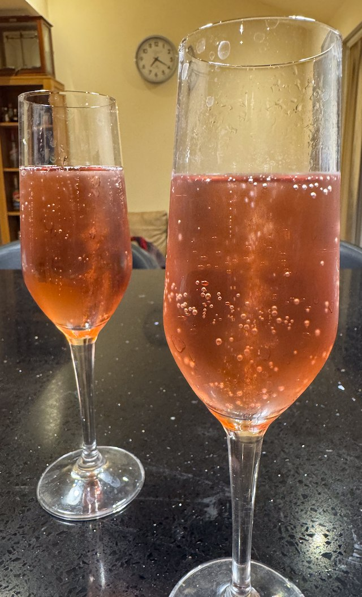

Kir Royale

Serves: 4
Cook Time: 10 min
From BBC Good Food
Ingredients
- 175 ml Champagne
- 1 tsp creme de cassis
Method
Pour Champagne in glass. Add 1 tsp creme de cassis.

From BBC Good Food
Pour Champagne in glass. Add 1 tsp creme de cassis.